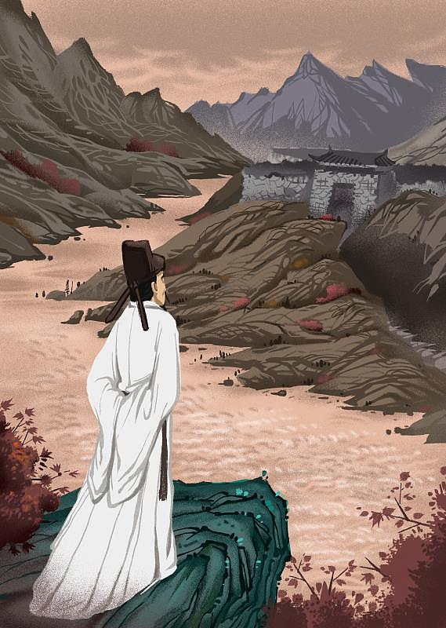

诗韵
古诗分类
推荐
先秦
两汉
唐代
宋代
明代
清代
暮江吟
唐代
:
白居易
一道残阳铺水中，半江瑟瑟半江红。
可怜九月初三夜，露似真珠月似弓。
写景
,
写水
观沧海
两汉
:
曹操
东临碣石，以观沧海。
水何澹澹，山岛竦峙。
树木丛生，百草丰茂。
秋风萧瑟，洪波涌起。
日月之行，若出其中；
星汉灿烂，若出其里。
幸甚至哉，歌以咏志。
古诗三百首
,
初中古诗
,
乐府
古诗文
视频
作者
诗友圈
我的